Kernideen
Projekte beliebig tief
Projekte und Unterprojekte gehören Personen oder Teams; Rechte werden vererbt und lassen sich je Projekt freigeben.
Passkey zuerst
Anmeldung per WebAuthn, mehrere benannte Passkeys, Sessions einsehbar, getrennte Wiederherstellung.
PWA und SwiftUI
Web-App (SvelteKit) und native Apps für iOS, macOS und watchOS teilen sich eine API und dieselben Fachregeln.
MCP und OAuth
Externe Agenten sprechen über einen MCP-Endpunkt mit OAuth 2.1 (PKCE, Resource Indicators) mit der App.
Lokale Mac-Runner
Ein Runner startet Claude Code im lokalen Projektordner. Aufträge und Checkpoints liegen in der App, nicht in einer Chat-Sitzung.
Rückfragen an der Aufgabe
Fragen, Fortschritt, Abnahmekriterien und Anhänge hängen direkt an der Aufgabe.
Screenshots
Echte Aufnahmen der PWA mit Demo-Daten.

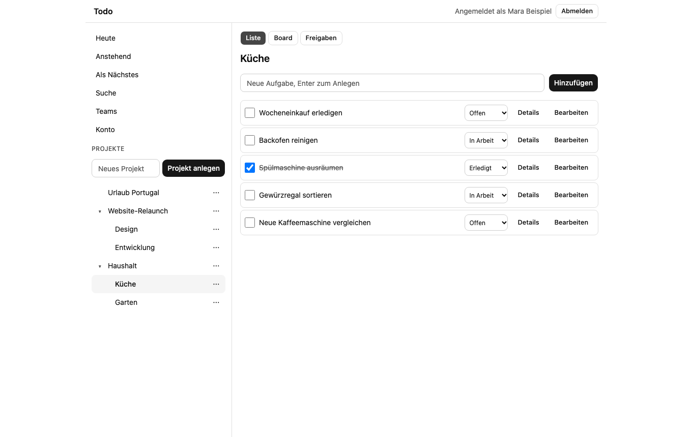

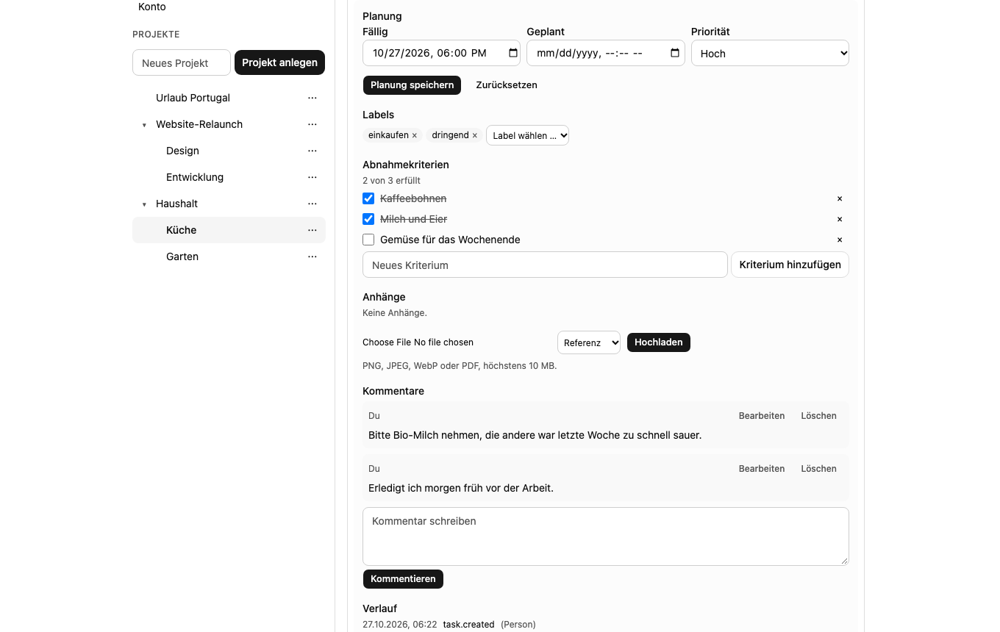

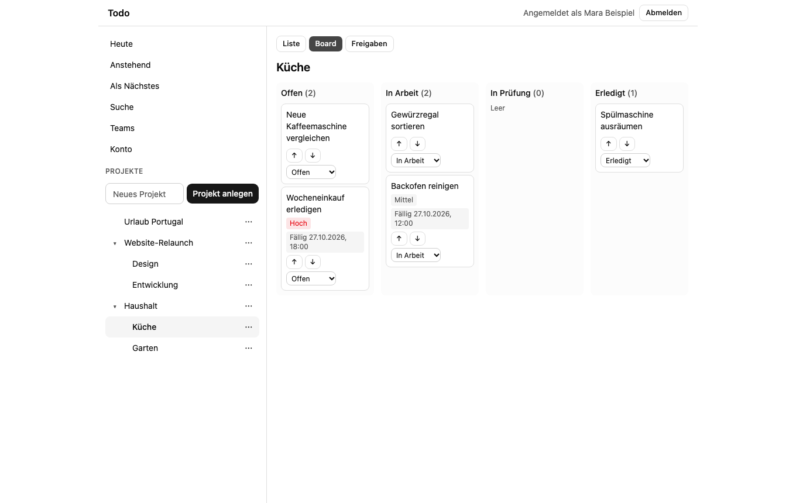

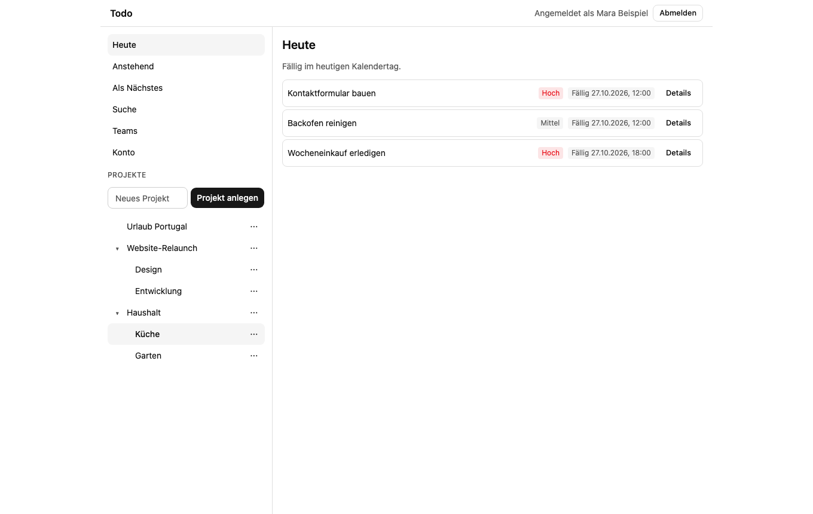

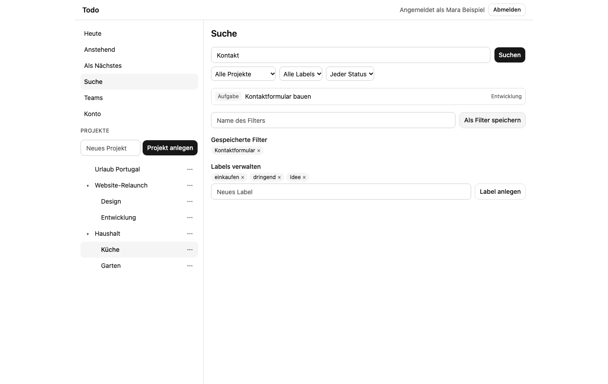

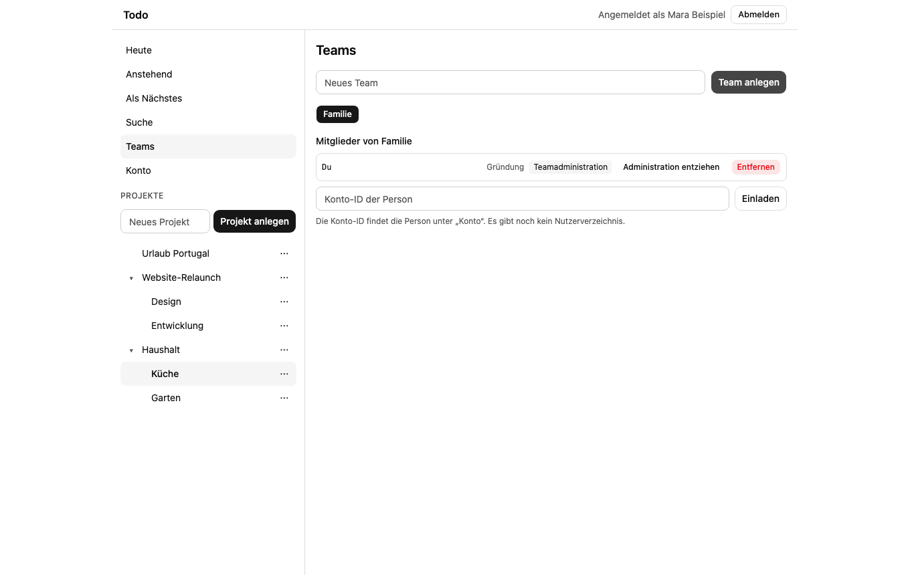

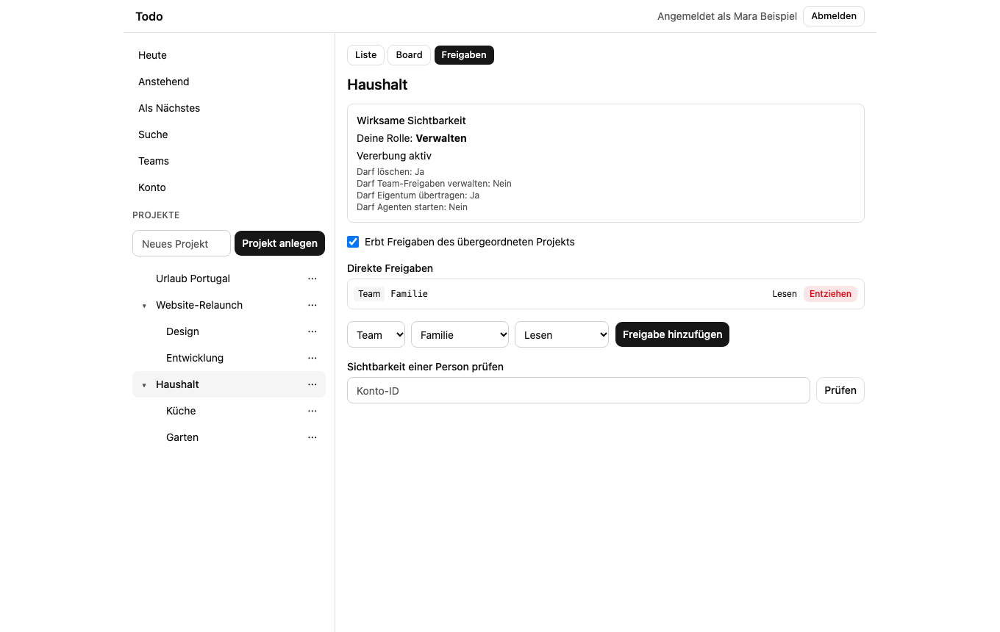

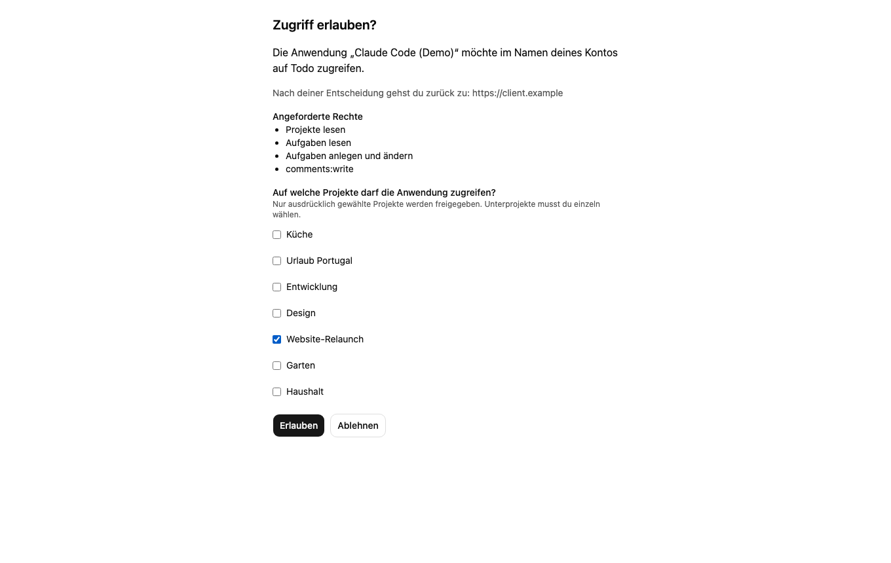

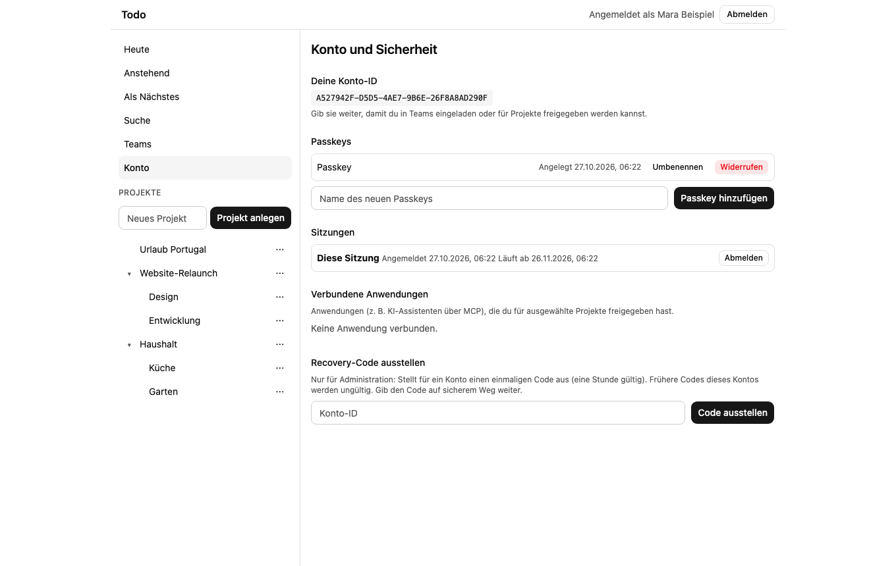

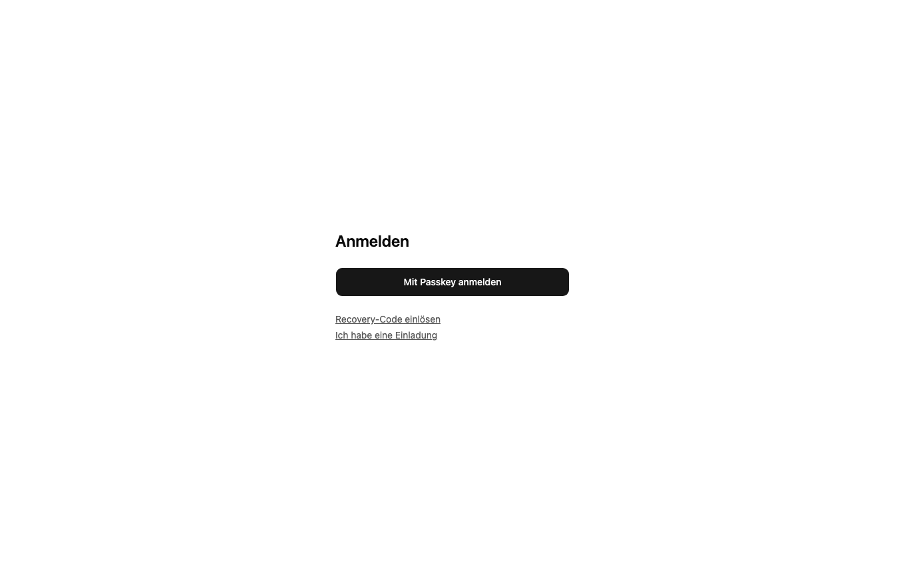

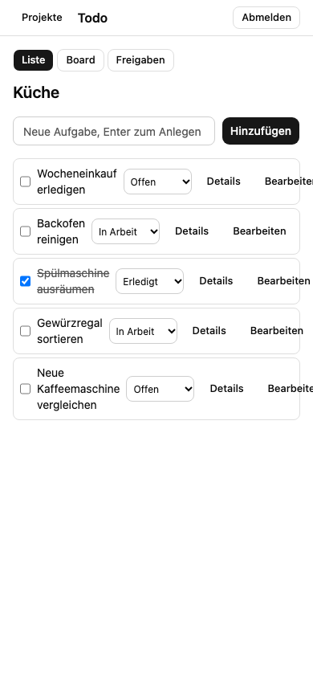

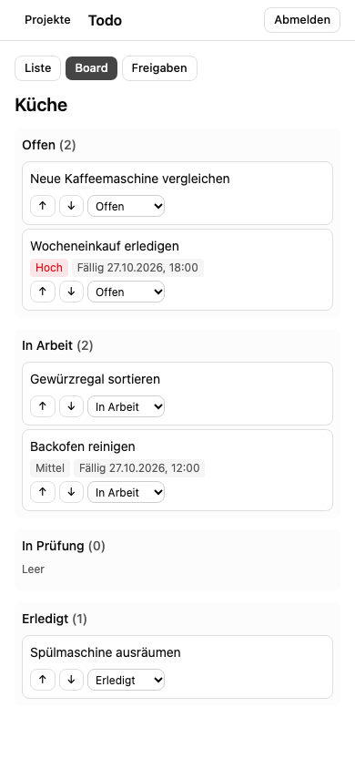

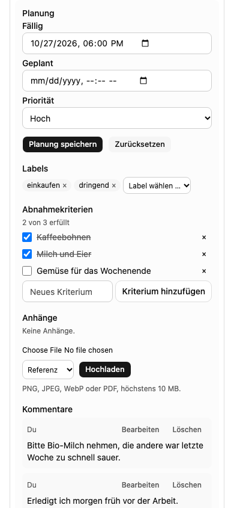
Architektur
PWA / SwiftUI / MCP-Clients / Mac-Runner
| HTTPS
API-Replikate (Swift, Vapor)
gemeinsame Fachlogik und Rechteprüfung
|
MariaDB + S3-kompatibler Dateispeicher
Modularer Monolith in Swift (Vapor, Fluent), MariaDB, SvelteKit-PWA mit statischer Auslieferung. Deployment als Docker-Image, Betrieb im Swarm.
Status
In aktiver Entwicklung. Backend (Identität, Projekte, Aufgaben, Teams/Freigaben, Anhänge, Kommentare, Planung, OAuth/MCP, Agentenaufträge) und PWA-Oberflächen sind vorhanden und getestet; echte Geräte-, Browser- und Produktionsprüfungen stehen teilweise aus. Der genaue Stand steht im Repository unter docs/STATUS.md.
Entwicklung
| Dienst | Port |
|---|---|
| MariaDB (Entwicklung) | 23306 |
| S3Mock (Anhänge) | 29090 |
| Backend (Docker) | 28080 |
| PWA (Vite-Dev-Server) | 25173 |
docker compose up -d db s3 swift run App serve --port 28081 cd web && npm install && npm run dev -- --port 25173
Dokumentation
Die Dokumentation liegt im Repository unter docs/: Produktkonzept, Architektur, Identität und Rechte, Agenten und MCP, Umsetzungsplan, Entscheidungen und ADRs. Die README im Repository verlinkt alle Dokumente.